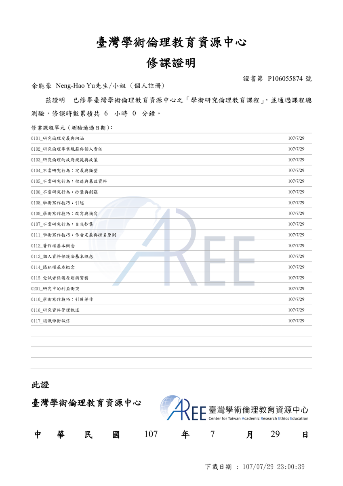
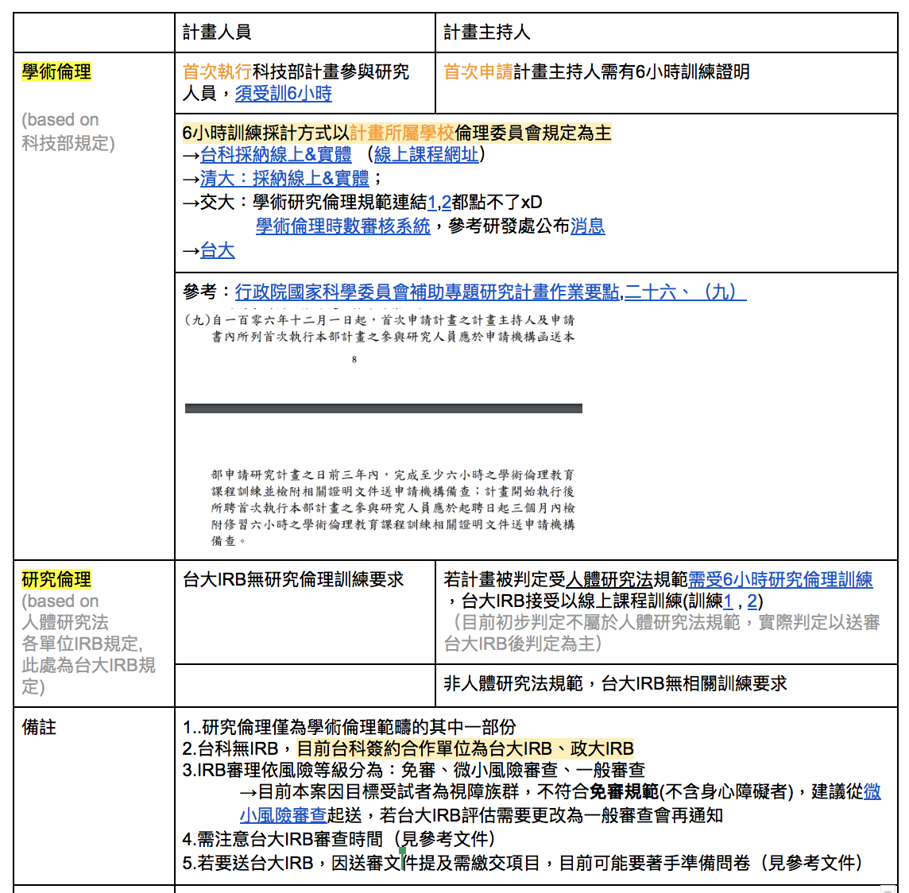
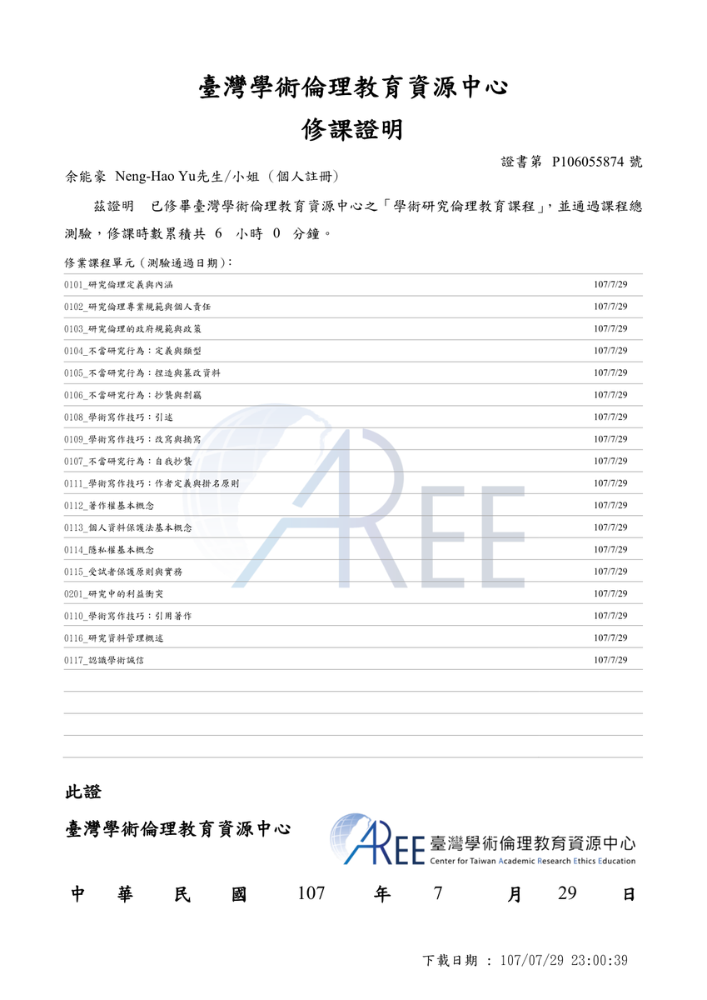
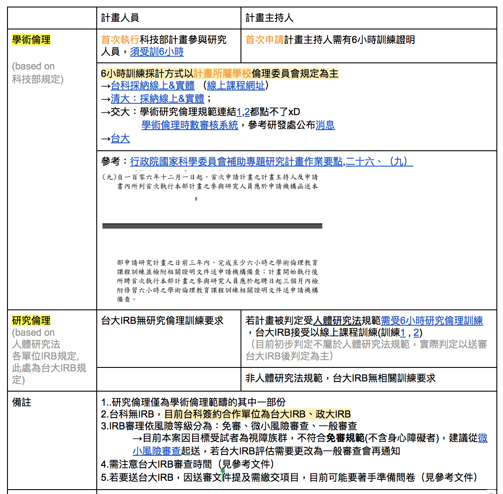

Posted by Stanley · Jun 28, 2019 at 7:14 AM IRB 研究倫理訓練證明 跑研究的各位都要有IRB 研究倫理訓練證明喔，至少有跟著盲人走的研究助理們都要，煩請老師們跟助理們都看看自己手上有沒有這個證書，申請IRB 應該需要大家的證書(我不確定台科大的規定，再煩請 Hsien-Hui 指點)沒有的話如果暑假有看到有講座趕快把握時間去上課 Comments & Events Hsien-Hui Tang 唐玄輝, 總監 基本上所有人都要去上課 Jun 28, 2019 at 7:30 AM Notified 9 people Jones Yu, 計畫共同主持人 之前政大是用線上課程認証，流程很方便，助理們可至 https://ethics.moe.edu.tw/courses_process/ 註冊，上網閱讀課程就可取得証書。 Jun 29, 2019 at 12:48 PM Notified 9 people Hsien-Hui Tang 唐玄輝, 總監 Jones 所以是任一IRB課程6小時就可以? Jul 04, 2019 at 2:09 PM Notified 11 people Stanley, 計畫共同主持人 這個課程要跟台科大IRB確認一下喔。因為交大現在的IRB就不看「學術倫理」的（以前他可以看）這個線上課程是學術倫理不是研究倫理。如果台科大IRB願意把學術倫理的放進去研究倫理的驗證，那是方便得多。但是很有可能無法 Jul 04, 2019 at 4:08 PM Notified 11 people Jones Yu, 計畫共同主持人 網站上有IRB相關課程 https://ethics.moe.edu.tw/courses_intro/附件是我修過的課程項目，以研究倫理為主。政大接受線上證明，台科大再請 Wei-An 問一下喔!  cert_P106055874.pdf 554 KB • Download Jul 04, 2019 at 5:38 PM Notified 11 people Hsien-Hui Tang 唐玄輝, 總監 學生都沒有「學術倫理」，那是老師的事情。 Jul 08, 2019 at 1:51 PM Notified 12 people Linda.蕭宇彤, 兼任助理 我整理了一下科技部規章、詢問台科研發處人員、詢問台大IRB人員得到的結果：https://tinyurl.com/y39m7ksw詳細的規章參考和相關文件圖片、連結都請再點進文件裡閱讀確認，感謝~  image.png 457 KB • Download Jul 11, 2019 at 11:36 AM Notified 12 people Hsien-Hui Tang 唐玄輝, 總監 所以結果是可以用網站還是不能用網站？ 學術倫理訓練可(但首次的人才需) 研究倫理規定要看投哪裡的IRB Jul 11, 2019 at 11:38 AM Notified 12 people Linda.蕭宇彤, 兼任助理 Hsien-Hui 想請問老師計畫會投個學校的IRB(台大or政大) 因為台科沒有IRB,需要委外審理 沒差吧，是依台科規定 所以缐上可以 Jul 11, 2019 at 11:43 AM Notified 12 people Stanley, 計畫共同主持人 兩個都打電話問一下看哪一個可以用線上？ 台大IRB只需計畫主持人,可線上 只需要計畫主持人是什麼意思 通常只需要主持人的應該是學術倫理 研究倫理線上是否可以應該是分開的 Jul 11, 2019 at 11:57 AM Notified 12 people Jones Yu, 計畫共同主持人 台大IRB我另一個整合型計劃有送審過，那時提供的是線上修課証明，審查有pass，所以應該線上即可。此外，送審雖然只需主持人的修課証明，但團隊所有成員還是要去線上修課取認證！6小時的線上課程其實可以在一小時讀完並通過測驗，大家可先上網看囉！ Jul 11, 2019 at 8:17 PM Notified 12 people
Jones Yu, 計畫共同主持人 之前政大是用線上課程認証，流程很方便，助理們可至 https://ethics.moe.edu.tw/courses_process/ 註冊，上網閱讀課程就可取得証書。 Jun 29, 2019 at 12:48 PM Notified 9 people
Stanley, 計畫共同主持人 這個課程要跟台科大IRB確認一下喔。因為交大現在的IRB就不看「學術倫理」的（以前他可以看）這個線上課程是學術倫理不是研究倫理。如果台科大IRB願意把學術倫理的放進去研究倫理的驗證，那是方便得多。但是很有可能無法 Jul 04, 2019 at 4:08 PM Notified 11 people
Jones Yu, 計畫共同主持人 網站上有IRB相關課程 https://ethics.moe.edu.tw/courses_intro/附件是我修過的課程項目，以研究倫理為主。政大接受線上證明，台科大再請 Wei-An 問一下喔!  cert_P106055874.pdf 554 KB • Download Jul 04, 2019 at 5:38 PM Notified 11 people
Linda.蕭宇彤, 兼任助理 我整理了一下科技部規章、詢問台科研發處人員、詢問台大IRB人員得到的結果：https://tinyurl.com/y39m7ksw詳細的規章參考和相關文件圖片、連結都請再點進文件裡閱讀確認，感謝~  image.png 457 KB • Download Jul 11, 2019 at 11:36 AM Notified 12 people
Hsien-Hui Tang 唐玄輝, 總監 所以結果是可以用網站還是不能用網站？ 學術倫理訓練可(但首次的人才需) 研究倫理規定要看投哪裡的IRB Jul 11, 2019 at 11:38 AM Notified 12 people
Linda.蕭宇彤, 兼任助理 Hsien-Hui 想請問老師計畫會投個學校的IRB(台大or政大) 因為台科沒有IRB,需要委外審理 沒差吧，是依台科規定 所以缐上可以 Jul 11, 2019 at 11:43 AM Notified 12 people
Stanley, 計畫共同主持人 兩個都打電話問一下看哪一個可以用線上？ 台大IRB只需計畫主持人,可線上 只需要計畫主持人是什麼意思 通常只需要主持人的應該是學術倫理 研究倫理線上是否可以應該是分開的 Jul 11, 2019 at 11:57 AM Notified 12 people
Jones Yu, 計畫共同主持人 台大IRB我另一個整合型計劃有送審過，那時提供的是線上修課証明，審查有pass，所以應該線上即可。此外，送審雖然只需主持人的修課証明，但團隊所有成員還是要去線上修課取認證！6小時的線上課程其實可以在一小時讀完並通過測驗，大家可先上網看囉！ Jul 11, 2019 at 8:17 PM Notified 12 people
 Hsien-Hui
Hsien-Hui
因為交大現在的IRB就不看「學術倫理」的（以前他可以看）這個線上課程是學術倫理不是研究倫理。
如果台科大IRB願意把學術倫理的放進去研究倫理的驗證，那是方便得多。但是很有可能無法
附件是我修過的課程項目，以研究倫理為主。
政大接受線上證明，台科大再請
詳細的規章參考和相關文件圖片、連結都請再點進文件裡閱讀確認，感謝~
此外，送審雖然只需主持人的修課証明，但團隊所有成員還是要去線上修課取認證！6小時的線上課程其實可以在一小時讀完並通過測驗，大家可先上網看囉！